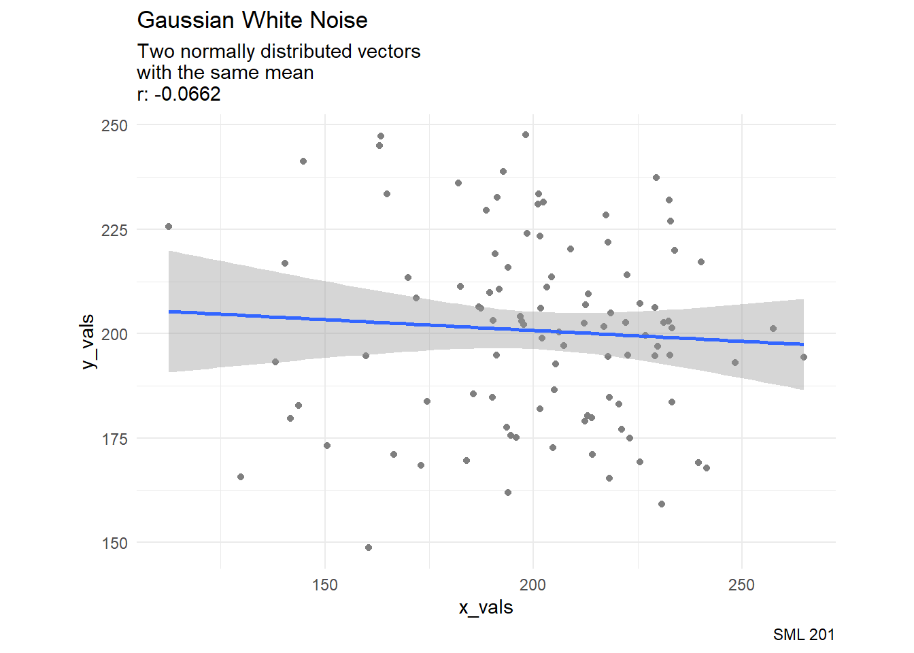

library("infer")
library("janitor")
library("pwr")
library("tidyverse")
# school colors
princeton_orange <- "#E77500"
princeton_black <- "#121212"
# data set: GPT detectors
GPT_detectors <- readr::read_csv('detectors.csv')
# GPT_detectors <- readr::read_csv('https://raw.githubusercontent.com/rfordatascience/tidytuesday/master/data/2023/2023-07-18/detectors.csv')SML 201
Start
Libraries and Helper Functions
- Goal: Introduce power analysis
Objectives:
contingency tables
p-hacking
effect size (Cohen’s h)
power analyses
Data: GPT Detectors
- GPT Detectors for academic dishonesty
- data hosted at TidyTuesday
- Paper: GPT Detectors Are Biased Against Non-Native English Writers
Exploratory Data Analysis
kind AI Human Total
AI 1158 2559 3717
Human 449 2019 2468
Total 1607 4578 6185GPT_detectors |>
ggplot(aes(x = model)) +
geom_bar(aes(fill = .pred_class),
position = "fill", stat = "count") +
labs(title = "GPT Chatbots",
subtitle = "Proportions of essays that were deemed AI or human",
caption = "SML 201",
x = "chatbot",
y = "proportions") +
theme_minimal(base_size = 14)GPT_detectors |>
ggplot(aes(x = detector)) +
geom_bar(aes(fill = .pred_class),
position = "fill", stat = "count") +
labs(title = "GPT Detectors",
subtitle = "Proportions of essays that were deemed AI or human",
caption = "SML 201",
x = "detector",
y = "proportions") +
theme_minimal(base_size = 14) +
theme(axis.text.x = element_text(angle = 90, vjust = 0.5, hjust=1))GPT_detectors |>
tabyl(kind, .pred_class) |>
adorn_totals(c("row", "col"))Confusion Matrix
A confusion matrix (aka contingency table) tallies the classifications versus their ground truth.
cross_tab <- GPT_detectors |> tabyl(kind, .pred_class)
print(cross_tab) kind AI Human
AI 1158 2559
Human 449 2019Quartet
Addressing: Are the detectors correctly identifying AI-generated work as works of AI?
- positive: AI
- negative: human
# True positive: AI classification of AI work
TP <- cross_tab[1,2]
# False negative: Human classification of AI work
FN <- cross_tab[1,3]
# False positive: AI classification of human work
FP <- cross_tab[2,2]
# True negative: Human classification of human work
TN <- cross_tab[2,3]Type I and Type II
- Type I errors: false positive
- Type II errors: false negative
print(paste0("The number of Type I errors is: ", FP))[1] "The number of Type I errors is: 449"print(paste0("The number of Type II errors is: ", FN))[1] "The number of Type II errors is: 2559"Metrics
There are many metrics for confusion matrices.
False Positive Rate (Fallout)
\[FPR = \frac{FP}{FP + TN}\]
FPR <- FP / (FP + TN)
print(paste0("The false positive rate is ", round(100*FPR, 2), " percent"))[1] "The false positive rate is 18.19 percent"Accuracy
\[\text{Accuracy} = \frac{TP + TN}{TP + FP + FN + TN}\]
acc <- (TP + TN) / (TP + FP + FN + TN)
print(paste0("The accuracy is ", round(100*acc, 2), " percent"))[1] "The accuracy is 51.37 percent"NHST
- Null hypothesis: the AI classification rate is the same for both AI and human generated essays.
- Alternative hypothesis: the AI classification rate is greater for AI generated essays than human generated essays.
\[H_{o}: \rho_{A} \leq \rho_{H}\] \[H_{a}: \rho_{A} > \rho_{H}\]
null_distribution <- GPT_detectors |>
specify(formula = .pred_class ~ kind, success = "AI") |>
hypothesize(null = "independence") |>
generate(reps = 1000, type = "permute") |>
calculate(stat = "diff in props", order = c("AI", "Human"))obs_diff <- GPT_detectors |>
specify(formula = .pred_class ~ kind, success = "AI") |>
# hypothesize(null = "independence") |>
# generate(reps = 1000, type = "permute") |>
calculate(stat = "diff in props", order = c("AI", "Human"))
null_distribution |>
get_p_value(obs_diff, direction = "greater") |>
pull()[1] 0Since the p-value < 0.05, we reject the null hypothesis that the AI classification rate is the same for both AI and human generated essays (at the \(\alpha = 0.05\) significance level).
Replication Crisis
Catalyst
Professor Daryl Bem, Cornell University
2011 peer-reviewed and publised paper
demonstrated that college students have ESP (extra sensory perception)
- achieved p-value < 0.05
- achieved some effect size
p-hacking
The more statistical analyses a researcher runs—the more hypotheses they “test”—the more likely that at least one of these analyses will produce a result that appears to be “significant”, simply by chance. — Sean Trott
- XKCD: Significant
- p-hacking in R by Sean Trott
Project 3
Disclosure: the requested tasks in Project 3 may constitute “p-hacking”

Gaussian White Noise
In this exploration, we are going to try to extract “significance” (p-value < 0.05) from Gaussian white noise
\[X, Y \sim N(\mu = 201, \sigma^{2} = 25^{2})\]
x_vals <- rnorm(100, 201, 25)
y_vals <- rnorm(100, 201, 25) #that is, same meancor_val <- cor(x_vals, y_vals)
data.frame(x_vals, y_vals) |>
ggplot(aes(x = x_vals, y = y_vals)) +
coord_equal() +
geom_point(color = "gray50") +
geom_smooth(formula = "y ~ x",
method = "lm") +
labs(title = "Gaussian White Noise",
subtitle = paste0("Two normally distributed vectors\nwith the same mean\nr: ", round(cor_val, 4)),
caption = "SML 201") +
theme_minimal()
N <- 1000 #number of replicates
slopes <- rep(NA, N)
p_vals <- rep(NA, N)
for(i in 1:N){
this_x <- sample(x_vals) #permutation
this_lm <- summary(lm(y_vals ~ this_x))
slopes[i] <- this_lm$coefficients[2]
p_vals[i] <- this_lm$coefficients[8]
}df_for_graph <- data.frame(slopes, p_vals) |>
mutate(result = ifelse(p_vals < 0.05, "significant", "not significant"))df_for_graph |>
ggplot(aes(x = slopes, y = p_vals, color = result)) +
geom_point() +
labs(title = "The Search for Significance",
subtitle = "After resampling the noise, we may have found significance",
caption = "Source: Sean Trott",
y = "p-value") +
theme_minimal()detection_rate <- mean(p_vals < 0.05)We have found “significance” in 5 percent of our replicates.
p-hacking
What if a research team reported findings of “significance” from the 5 percent and discarded results from the other 95 percent?
Mitigating p-Hacking
- Researchers can pre-register their studies (usually around the same time as the ethics approval) to show what they are trying to measure first.
- Report confidence intervals too
- Report effect sizes too
Effect Size
Cohen
advocate of power analysis and effect size
critic of NHST
known for
- Cohen’s kappa
- Cohen’s h
- Cohen’s d
Cohens h
Cohen’s h is a measure of distance between two proportions
\[h = |2\text{arcsin}\sqrt{p_{1}} - 2\text{arcsin}\sqrt{p_{2}}|\]
suggested interpretation:
- \(h = 0.20\): “small effect size”
- \(h = 0.50\): “medium effect size”
- \(h = 0.80\): “large effect size”
# sensitivity: probability of detection
p1 <- TP / (TP + FN)
# false positive rate
p2 <- FP / (TN + FP)
pwr::ES.h(p1, p2)[1] 0.3030231We have found a small effect size in GPT detection rate moving from human-generated essays to AI-generated essays.
Case Study: GPT Detection for non-native English Writing
Counts
GPT_detectors |>
filter(!is.na(native)) |>
tabyl(native, .pred_class) |>
adorn_totals(c("row", "col")) native AI Human Total
No 390 247 637
Yes 59 1772 1831
Total 449 2019 2468Confusion Matrix
cross_tab_2 <- GPT_detectors |>
filter(!is.na(native)) |>
tabyl(native, .pred_class)
TP_2 <- cross_tab_2[1,2]
FN_2 <- cross_tab_2[1,3]
FP_2 <- cross_tab_2[2,2]
TN_2 <- cross_tab_2[2,3]NHST
null_distribution <- GPT_detectors |>
filter(!is.na(native)) |>
specify(formula = .pred_class ~ native, success = "AI") |>
hypothesize(null = "independence") |>
generate(reps = 1000, type = "permute") |>
calculate(stat = "diff in props", order = c("No", "Yes"))
obs_diff <- GPT_detectors |>
filter(!is.na(native)) |>
specify(formula = .pred_class ~ native, success = "AI") |>
# hypothesize(null = "independence") |>
# generate(reps = 1000, type = "permute") |>
calculate(stat = "diff in props", order = c("No", "Yes"))
null_distribution |>
get_p_value(obs_diff, direction = "greater") |>
pull()[1] 0Since the p-value < 0.05, we reject the null hypothesis that the AI classification rate is the same for essays written by both native and non-native English speakers (at the \(\alpha = 0.05\) significance level).
Effect Size
# sensitivity: probability of detection
p1_2 <- TP_2 / (TP_2 + FN_2)
# false positive rate
p2_2 <- FP_2 / (TN_2 + FP_2)
pwr::ES.h(p1_2, p2_2)[1] 1.436245We have found a large effect size in GPT detection rate moving from native-speaker writers to non-native writers.
Power Analysis
Power (TPR)
The power of a significance test is the probability of correctly rejecting a null hypothesis when it is actually false.
\[\text{power} = \text{TPR} = \frac{TP}{TP + FN}\] * also called true positive rate, recall, sensitivity, probability of detection, hit rate
Seeking Power
For the first comparison between the AI-generated essays and the human-generated essays, what was the power of the NHST for GPT detection?
pwr.p.test(alternative = "greater",
h = ES.h(p1,p2),
n = sum(!is.na(GPT_detectors$kind)),
# power = ? #i.e. this is what we are trying to find
sig.level = 0.05
)
proportion power calculation for binomial distribution (arcsine transformation)
h = 0.3030231
n = 6185
sig.level = 0.05
power = 1
alternative = greaterFor the second comparison between the native speaker written essays and the non-native written essays, what was the power of the NHST for GPT detection?
pwr.p.test(alternative = "greater",
h = ES.h(p1_2,p2_2),
n = sum(!is.na(GPT_detectors$native)),
# power = ? #i.e. this is what we are trying to find
sig.level = 0.05
)
proportion power calculation for binomial distribution (arcsine transformation)
h = 1.436245
n = 2468
sig.level = 0.05
power = 1
alternative = greaterSeeking Sample Size
For the first comparison between the AI-generated essays and the human-generated essays, how large should the sample size be (at least) to achieve (at least) 0.80 power?
pwr.p.test(alternative = "greater",
h = ES.h(p1,p2),
#n = ? #i.e. this is what we are trying to find
power = 0.80,
sig.level = 0.05
)
proportion power calculation for binomial distribution (arcsine transformation)
h = 0.3030231
n = 67.33124
sig.level = 0.05
power = 0.8
alternative = greaterThis experiment needed at least 68 essays.
Quo Vadimus?
- Precept 9
- Research Consent
- Project 3 (Due Nov 20)
- Exam 2 (December 5)
Footnotes
(optional) Additional Resources
Session Info
sessionInfo()R version 4.4.1 (2024-06-14 ucrt)
Platform: x86_64-w64-mingw32/x64
Running under: Windows 10 x64 (build 19045)
Matrix products: default
locale:
[1] LC_COLLATE=English_United States.utf8
[2] LC_CTYPE=English_United States.utf8
[3] LC_MONETARY=English_United States.utf8
[4] LC_NUMERIC=C
[5] LC_TIME=English_United States.utf8
time zone: America/New_York
tzcode source: internal
attached base packages:
[1] stats graphics grDevices utils datasets methods base
other attached packages:
[1] lubridate_1.9.3 forcats_1.0.0 stringr_1.5.1 dplyr_1.1.4
[5] purrr_1.0.2 readr_2.1.5 tidyr_1.3.1 tibble_3.2.1
[9] ggplot2_3.5.1 tidyverse_2.0.0 pwr_1.3-0 janitor_2.2.0
[13] infer_1.0.7
loaded via a namespace (and not attached):
[1] utf8_1.2.4 generics_0.1.3 lattice_0.22-6 stringi_1.8.4
[5] hms_1.1.3 digest_0.6.35 magrittr_2.0.3 evaluate_1.0.1
[9] grid_4.4.1 timechange_0.3.0 fastmap_1.2.0 Matrix_1.7-0
[13] jsonlite_1.8.8 mgcv_1.9-1 fansi_1.0.6 scales_1.3.0
[17] cli_3.6.3 crayon_1.5.3 rlang_1.1.4 splines_4.4.1
[21] bit64_4.5.2 munsell_0.5.1 withr_3.0.2 yaml_2.3.8
[25] parallel_4.4.1 tools_4.4.1 tzdb_0.4.0 colorspace_2.1-1
[29] vctrs_0.6.5 R6_2.5.1 lifecycle_1.0.4 snakecase_0.11.1
[33] htmlwidgets_1.6.4 bit_4.5.0 vroom_1.6.5 archive_1.1.8
[37] pkgconfig_2.0.3 pillar_1.9.0 gtable_0.3.5 glue_1.8.0
[41] xfun_0.48 tidyselect_1.2.1 rstudioapi_0.17.0 knitr_1.48
[45] farver_2.1.2 nlme_3.1-164 htmltools_0.5.8.1 labeling_0.4.3
[49] rmarkdown_2.28 compiler_4.4.1
Example Callout Block
note, tip, warning, caution, or important